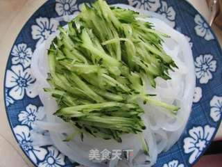

川味凉粉
食材明细
主料
豌豆淀粉
适量
黄瓜
适量
小葱
适量
麻辣红油
适量
辅料
醋
适量
生抽
适量
白糖
适量
麻辣
口味
煮
工艺
数小时
耗时
简单
难度
川北凉粉的做法步骤
1
豌豆淀粉到入碗中，豌豆和水的比例是1:8，就是豌豆100克，水就需要800克，依此论推。
2
加水调匀。
3
锅里加入水烧开，倒入豌豆淀粉。
4
边搅拌边倒入，不然会成团不均匀。
5
容器刷上植物油。

6
放冰箱冷藏，吃的时候直接倒在案板上。
7
拿刮条器刮成条状。
8
拿刮条器刮成条状。
9
这一块凉粉可以做两盘。

10
黄瓜切丝放在凉粉上面。
11
碗里加入醋，生抽，盐，白糖，麻辣红油拌匀。
12
倒入凉粉中。
13
再撒上小葱末即可。
14
吃。
小窍门
1、粉和水的比例也可以自行配比，如果喜欢硬一些拿么粉就多加一些，如果喜欢软一些的凉粉就水多一些，但是第一次做最好是按照比例添加，其实凉粉的成败就在于粉和水的配比。
凉粉在做糊时，一定要边搅拌边倒入豌豆粉，不然会成团不均匀。
使用的厨具：煮锅、炒锅
所属分类： 凉菜 家常菜
风味人间CQ | ©版权所有
联系我们 | 邮箱:eotjs1433@163.com | 电话号码:18641267537